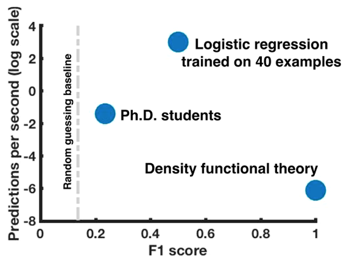

<section id="case-study">
    <div class="container">
        <h1>Case Studies</h1>
        <div class="content">
            <div class="case-study">
                <div class="case-study-graph">
                    <figure>
                        <!--  -->
                        <canvas id="myChart_02"></canvas>
                        <figcaption>Only 40 data points = 3x improvement!</figcaption>
                    </figure>
                </div>
                <div class="case-study-points">
                    <ul class="no-style">
                        <li>Gaussian process active learning model trained on ~100 unique electrolyte formulations, gathered over 12+ mo.</li>
                        <li>Aionics-guided downselection from >100,000 candidate solvent + salt combinations; experimental consideration intractable</li>
                        <li>Aionics identifies three new high performance materials in first week </li>
                        <li>Company CTO states Aionics provided 10x acceleration</li>
                    </ul>
                </div>
            </div>
        </div>
    </div>
</section>